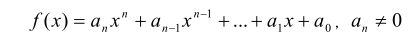

题目来源：https://www.luogu.org/problem/P1067
一元nn次多项式可用如下的表达式表示：

f(x)=a_nx^n+a_{n-1}x^{n-1}+\cdots +a_1x+a_0,a_n\ne 0f(x)=anxn+an−1xn−1+⋯+a1x+a0,an≠0
其中，a_ix^iaixi称为ii次项，a_iai 称为ii次项的系数。给出一个一元多项式各项的次数和系数，请按照如下规定的格式要求输出该多项式：
多项式中自变量为xx，从左到右按照次数递减顺序给出多项式。
多项式中只包含系数不为00的项。
如果多项式nn次项系数为正，则多项式开头不出现“+”号，如果多项式nn次项系数为负，则多项式以“-”号开头。
对于不是最高次的项，以“+”号或者“-”号连接此项与前一项，分别表示此项系数为正或者系数为负。紧跟一个正整数，表示此项系数的绝对值（如果一个高于00次的项，其系数的绝对值为11，则无需输出 11）。如果xx的指数大于11，则接下来紧跟的指数部分的形式为“x^bxb”，其中 bb为 xx的指数；如果 xx的指数为11，则接下来紧跟的指数部分形式为“xx”；如果 xx 的指数为00，则仅需输出系数即可。
多项式中，多项式的开头、结尾不含多余的空格。
输入共有 22 行
第一行11 个整数，nn，表示一元多项式的次数。
第二行有 n+1n+1个整数，其中第ii个整数表示第n-i+1n−i+1 次项的系数，每两个整数之间用空格隔开。
输出共 11 行，按题目所述格式输出多项式。
5 100 -1 1 -3 0 10
100x^5-x^4+x^3-3x^2+10
3 -50 0 0 1
-50x^3+1
NOIP 2009 普及组 第一题
对于100%数据，0 \le n \le 1000≤n≤100,-100 \le−100≤系数\le 100≤100
#include<iostream> #include<cstring> using namespace std; int main() { int n,flag = 0; cin >> n; for(int i = n;i >= 0;i--) { int a; int temp = n; cin >> a; if(a == 0 || (a == 0 && i == 0))//系数为0或者系数为零同时0次幂为0时 { flag++; continue; } if(a > 0)//系数大于零时 { if(i == 0)//零次幂 cout << "+" << a; else if(i == n - flag) if(a == 1)//最高次幂项的系数！！！并且系数为1时的情况，拎出来讨论 cout << "x^" << i;//最高次幂项的系数 !!!!!!!!!!只需要执行一次！ else cout << a << "x^" << i;//最高次幂项的系数！！！系数不为1时 else if(i == n - flag && a == 1)//非最高次幂项，系数为1时的情况 cout << "x^" << i; else if(i == 1 && a == 1)//系数和次幂均为一时 cout << "+x"; else if(i == 1)//一次幂时且系数不为1时的情况 cout << "+" << a << "x"; else if(a == 1)//系数为1时 cout << "+x^" << i; else cout << "+" << a << "x^" << i;//一般情况 } else { if(a < 0)//系数为负数的情况 { if(i == 0) cout << a; else if(a == -1 && i == 1) cout << "-x"; else if(a == -1) cout << "-x^" << i; else if(i == 1) cout << a << "x"; else cout << a << "x^" << i; } } } if(flag == n + 1)//系数均为0时的情况 cout << "0"; return 0; } /* 3 1 -100 0 0 */ /* 3 0 0 0 1 */
思路：切记将1与0拿出来分析，还有系数为“+”时的情况
此题不难，但是用这种方法的话绕的弯多，不是一个很好的题解，但可供参考